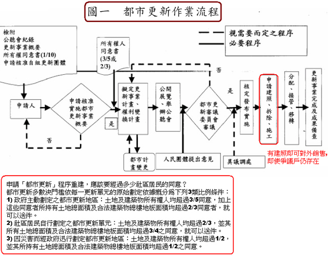
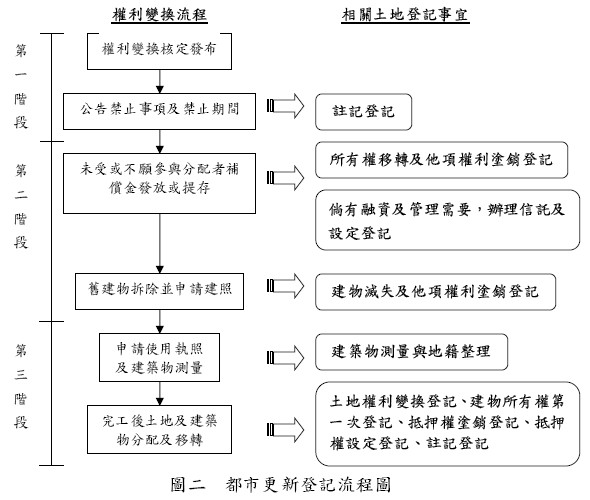

【都更】都更作業流程

 
Ø 什麼樣的資格才可以參加都市更新? 資格分為兩方面： •第一方面為面積： 都市更新單元劃定基準，應符合下列規定之一 (1)為完整之計畫街廓者。 (2)街廓內面積在二千平方公尺 以上者。 (3)街廓內鄰接二條以上之計畫道路，面積大於該街廓四分之一，且在一千平方公尺以上者。 (4)街廓內相鄰土地業已建築完成，確無法合併更新，且無礙建築設計及市容觀瞻，其面積在一千平方公尺以上，並為一次更新完成者。但其面積在五百平方公尺 以上，經敘明理由，提經審議委員會審議通過者。 (5)跨街廓更新單元之劃設，其中應至少有一街廓符合第一款至第四款規定之一，並採整體開發，且不影響各街廓內相鄰土地之開發者。 前項所稱街廓，係以基地四週面臨計畫道路為原則，如因基地鄰接永久性空地、公園、廣場、堤防、河川等，其鄰接部分邊界得視為街廓邊界。 •第二方面為環境條件：環境條件一般又稱為環境指標評估，在政府的規定裡面，有14項指標，只要符合其中任何3項指標，就可以通過環境指標的評估。 (1)20年以上磚造房屋，或30年以上鋼筋混凝土，或40年以上鋼骨混凝土建築。 (2)民國78年以前蓋的。 (3)距離捷運站200公尺以內。 (4)合法建築物，但沒有電梯、停車位也不夠。 (5)房子的坪數低於18.94坪。 (6)公寓沒有化糞池。 (7) 旁邊的巷子彎曲狹小，寬度小於 6 公尺。 (8)附近沒有違規使用的建築物。 (9)房子基礎下陷、樑柱牆壁腐蝕破損。 (10)附近巷道有被鐵皮屋封住，無法通行。 (11)不是防火建築物。 (12)附近有內政部、市政府指定的古蹟、歷史建築。 (13)附近打算都更的面積達3,000平方公尺。 (14)建蔽率超過法定建蔽率，且容積率低於法定容積率的一半。 Ø 更新地區和更新單元有何不同？ 更新地區係政府經調查建築物、實質環境之公共安全、公共交通、公共衛生、都市機能、社會治安及保存維護需求等劃設，其範圍可能包括數個街廓。 更新單元則是實施都市更新事業計畫之最小基地規模，由實施者依據市政府所訂更新基地規模及自行劃定更新單元評定基準等規定劃定。因此，一個更新地區範圍應至少包括一個以上更新單元。 Ø 辦理都市更新流程？ (1)辦理都市更新分為下列二個階段： •第一階段—都市更新事業概要 •申請資格：更新單元範圍內私有土地及私有合法建築物所有權人均超過1/10，並且其所有私有土地總面積及私有合法建築物總樓地板面積均超過1/10之同意 B.報核程序： •舉辦公聽會擬具事業概要。 •檢具公聽會記錄及事業概要向本府申請核准。 •事業概要核准後得自組更新團體或委託更新事業機構實施。 •第二階段—都市更新事業計畫 •申請資格：實施者擬定或變更都市更新事業計畫報核時，應達下列同意比例門檻。 依第10條規定申請獲准實施都市更新事業者，應經更新單元範圍內私有土地及私有合法建築物所有權人均超過3/5，並其所有土地總面積及合法建築物總樓地板面積均超過2/3之同意。 依第11條規定申請獲准實施都市更新事業者，應經更新單元範圍內私有土地及私有合法建築物所有權人均超過2/3，並其所有土地總面積及合法建築物總樓地板面積均超過3/4之同意。 申請都市更新事業計畫 •報核程序 •舉辦公聽會擬具事業計畫。 •檢具公聽會記錄及事業計畫向本府申請報核。 •公開展覽 30 日，並舉辦公聽會。 •召開都市更新審議委員會幹事會議審查。 •召開都市更新審議委員會審議。 本府核定實施。 Ø 都市更新需要花多久時間？ 可分三個步驟： (1)整合的時間 整合這塊土地內所有的所有權人，還有土地上的住戶，需要花多少時間，整合完畢後，才會開始進入行政流程。 (2)行政流程手續所需時間 一般來說，都市更新的四大行政流程，劃定單元、事業概要、事業計畫及權利變換計畫，這四大流程走完，大約需要一年半的時間，視個別狀況而定。如是政府公告之更新地區，因此其劃定單元的步驟即可省略。第二部分事業概要，此步驟依現在的規定可跳過的。而第三個事業計畫，視需要同意門檻，而同意門檻的規定，可依據都市更新第二十二條規定，一般來說，整個事業計畫行政流程走完需要6至9個月。再來，權利變換行政流程大約也需6個月，可是事業計畫跟權利變換計畫可合併，此兩步驟可合併，同時並送臺北市政府審議，因此如果併送的話約9個月的時間。 (3)施工營造時間 需看建築設計及建築高度，如建築物樓層越高，施工期間會越長，那跟結構也有關係，RC、SSS、 SRC結構的施工法也會有不同，一般來說平均一棟大樓的建築期間，從開工到完工交屋給客戶，需要兩年半的時間，這是平均值。 根據商業周刊的報導，臺北市都更處統計一個都市更新案約8年的時間才可完成，但不是都只是蓋房子與行政流程的時間，其實最耗時間的是第一階段的部份－整合時間，所有的都市更新案最困難與時間的花費，都是在整合的這段期間，整合時間的長短，幾乎完全決定這宗都市更新案所需花費的時間長短。打個比方說，如果這基地的地主，經過了兩年的時間才與實施者完成簽約，接下來跑行政流程又花了一年，蓋房子又蓋了兩年半，因此2+1+2.5，總共花了5年半，因此這就是都更案從開始發起到完工交屋總共所需要的時間。 Ø 都市更新事業概要有時間限制嗎？ 依都市更新條例第54條規定，都市更新事業概要計畫自獲准之日起一年內，應擬具都市更新事業計畫報核，如逾期未報核者，主管機關得撤銷其更新核准。但實施者整合地主如尚須時間或有其他正當之理由，可申請展期，展期之期間每次不得超過六個月，並以二次為限。因此都市更新事業計畫遲遲未能取得同意門檻比例，且於期限內未擬具都市更新事業計畫報本府核可者，本府得撤銷該更新核准，並建議申請人或實施者重新檢討更新單元範圍及其推動可行性重提都市更新事業概要計畫。 Ø 都市更新計畫和都市更新事業計畫有何不同？ 都市更新計畫是擬定都市更新事業計畫之指導，可由政府或民間實施者擬定，經市都委會審議通過後公告實施。 都市更新事業計畫係由實施者依照都市更新條例第21條規定擬定。內容應詳細表明土地使用、公共設施興修、建築設計、財務計畫、拆遷安置、實施進度等，經更新委員會審議通過後據以實施。 如何成立都市更新會？ 土地及合法建物所有權人，擬自行實施都市更新事業，依「都市更新團體設立管理及解散辦法，訂定章程申請當地直轄市、縣（市）主管機關核准」，申請設立「都市更新會」，更新會名稱冠以更新地區及更新單元之名稱。